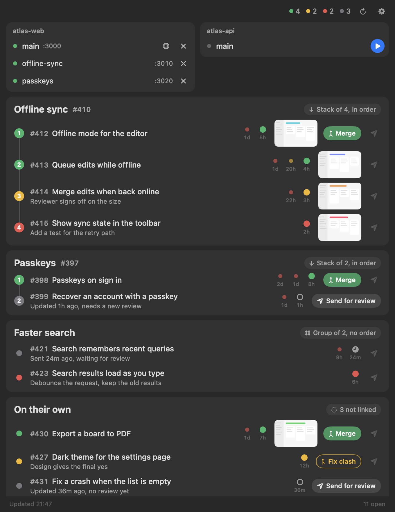
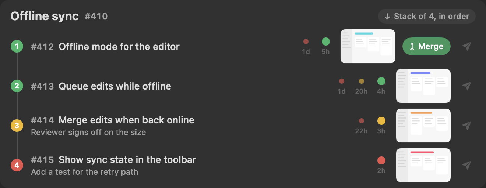
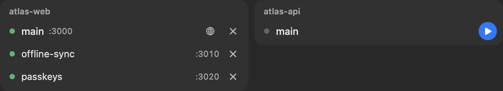

A small app for macOS
One quiet window for every pull request, every review round and every local server. It sits in your Dock and tells you what is ready, what is waiting, and what needs you.

Stacks stay in order. Number one lands first, and the line down the side shows what depends on what.
Loose pull requests that belong together are grouped and given a short name, so twenty rows read like five ideas.

Every review is a dot. Oldest on the left, with how long ago it was. The last one is the answer.
Push a fix and a ring appears: changed, not reviewed yet. When the review comes in, the ring fills with its color.
Claude reads what the reviewer wrote and tells yellow from red, in nine words or fewer. "Changes requested" stops meaning two different things.
The pull request, in your browser, on the first click. Even when Perch is not the app in front.
The link goes to your Slack channel, as you, through the Slack app. No bot, no token.
Squash and merge an approved pull request. Then confetti, across your whole screen.
When only the changelog conflicts, one click keeps both sides and pushes.
Add any folders. Each one gets a run button with the command you choose. Perch guesses it from what is in the folder.
It asks macOS what is listening, so it sees every dev server in those folders and their worktrees, whoever started it: you, a script, or an agent. Port, branch, open, stop.

Reads your pull requests and merges them. If gh works in your terminal, Perch works.
$ gh auth loginReads each review and names your groups, with the fast model. Optional. Without it, a reviewed pull request stays grey until it is approved.
$ claudeSends links through the Slack app already on your Mac. Optional. macOS asks once for permission.
no setupcurl -fsSL https://galcabinet.github.io/perch/install.sh | sh
The command installs Perch in Applications and opens it. If you download the zip, macOS stops the first open because the app is not notarized yet: go to System Settings, Privacy & Security, and choose Open Anyway.